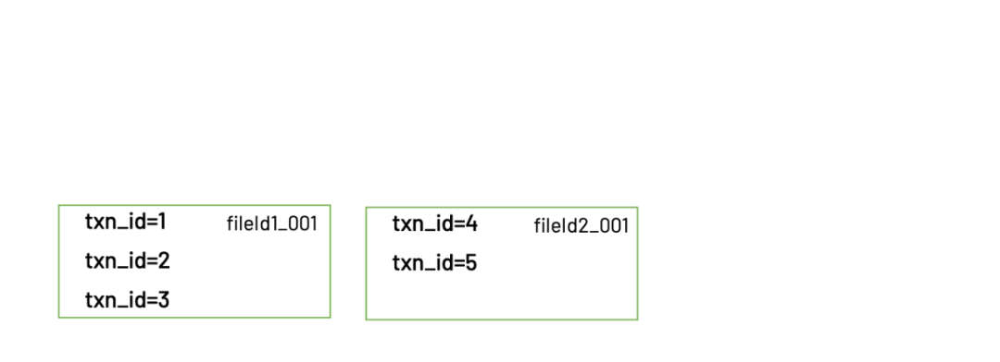
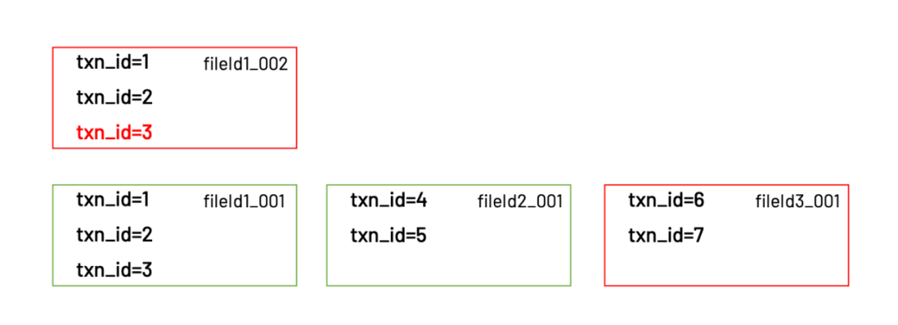

之前的文章对Hudi的更新操作原理进行了较为详细的讲解，接下来是Hudi的另一大特色-事务功能。
原理解释
Hudi的事务功能被称为Timeline，因为Hudi把所有对一张表的操作都保存在一个时间线对象里面。Hudi官方文档中对于Timeline功能的介绍稍微有点复杂，不是很清晰。其实从用户角度来看的话，Hudi提供的事务相关能力主要是这些：
| 特性 | 功能 |
|---|---|
| 原子性 | 写入即使失败，也不会造成数据损坏 |
| 隔离性 | 读写分离，写入不影响读取，不会读到写入中途的数据 |
| 回滚 | 可以回滚变更，把数据恢复到旧版本 |
| 时间旅行 | 可以读取旧版本的数据（但太老的版本会被清理掉） |
| 存档 | 可以长期保存旧版本数据（存档的版本不会被自动清理） |
| 增量读取 | 可以读取任意两个版本之间的差分数据 |
介绍完功能清单，接下来就讲一讲事务的实现原理。内容以COW表为主，但MOR表也可以由此类推，因为MOR表本质上是对COW表的优化。
假设我们还是5条初始数据:
| txn_id | user_id | item_id | amount | date |
|---|---|---|---|---|
| 1 | 1 | 1 | 2 | 20220101 |
| 2 | 2 | 1 | 1 | 20220101 |
| 3 | 1 | 2 | 3 | 20220101 |
| 4 | 1 | 3 | 1 | 20220102 |
| 5 | 2 | 3 | 2 | 20220102 |
实际存储的目录结构是这样的（文件名做了简化）
warehouse
├── .hoodie
├── 20220101
│ ├── fileId1_001.parquet
│ └── fileId1_002.parquet
├── 20220102
│ └── fileId2_001.parquet
└── 20220103
└── fileId3_001.parquet
它的数据保存在fileId1_001和fileId2_001两个文件里。

我们称呼这个版本为v1。接下来我们写入3条新的数据，其中1条是更新，2条是新增。
| txn_id | user_id | item_id | amount | date |
|---|---|---|---|---|
| 3 | 1 | 2 | 5 | 20220101 |
| 6 | 1 | 4 | 1 | 20220103 |
| 7 | 2 | 3 | 2 | 20220103 |
写入后的目录结构如下
warehouse
├── .hoodie
├── 20220101
│ ├── fileId1_001.parquet
│ └── fileId1_002.parquet
├── 20220102
│ └── fileId2_001.parquet
└── 20220103
└── fileId3_001.parquet
更新的1条数据（txn_id=3）保存在fileId1_002这个文件里，而新增的2条数据（txn_id=6和txn_id=7）则被保存在fileId3_001。

我们称呼更新后的版本为v2。
Hudi在这张表的timeline里（实际存放在.hoodie目录下）会记录下v1和v2对应的文件列表。当client读取数据时，首先会查看timeline里最新的commit是哪个，从最新的commit里获得对应的文件列表，再去这些文件读取真正的数据。

v1和v2对应的文件
Hudi通过这种方式实现了多版本隔离的能力。当一个client正在读取v1的数据时，另一个client可以同时写入新的数据，新的数据会被写入新的文件里，不影响v1用到的数据文件。只有当数据全部写完以后，v2才会被commit到timeline里面。后续的client再读取时，读到的就是v2的数据。
顺带一提的是，尽管Hudi具备多版本数据管理的能力，但旧版本的数据不会无限制地保留下去。Hudi会在新的commit完成时开始清理旧的数据，默认的策略是“清理早于10个commit前的数据”。
TimeLine
概念

...
...
This is copyright.